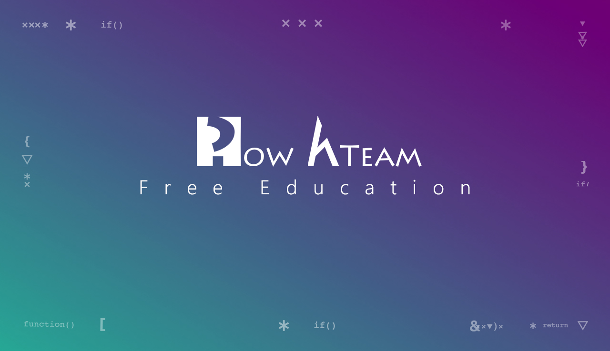

-
Tài liệu Document IT

IT(Imformation Technology) là ngành học mà hiện nay đang là xu hướng mà nhiều bạn học tìm tới. Học IT ngoài thời gian trên lớp bạn phải thật cố gắng trong các bài thực hành ở nhà. Thậm chí phải đi học thêm tại mọt số các địa điểm đào tạo. Nhưng các bạn không được quên những tài liệu học tập để các bạn có thể làm và học tại nhà. Cùng mình tham khảo một số các tài liệu học tập mà được nhiều bạn IT chú ý đến nhé!
-

W3schools là trang web giáo dục cho công nghệ web trực tuyến. Nội dung bao gồm hướng dẫn và tài liệu tham khảo liên quan đến HTML, CSS, JS, PHP, PYTHON, SQL, BOOSTRAP,... W3schools hướng dẫn về web với hơn 1000 các ví dụ cụ thể. Bằng cách sử dụng Trylt editor người đọc có thể đọc và chỉnh sửa code trong sandbox. Rất thuận tiện và dễ học.
-

Kteam là một trang web học trược tuyến. Hỗ trợ trong nhiều lĩnh vực. Kteam đã thu hút đông đảo các kĩ sư tương lai bằng các tài liệu của IT, các video hướng dẫn học cũng tương đối chi tiết dễ hiểu. Hãy tự mình thử đi!
-

CodeStepByStep là một trang web bài tập với hàng nghìn câu hỏi trắc nghiệm lí thuyết, sửa code, ...đều được thể hiện trong CodeStepbystep. Mang lại tính tư duy cao trong học. Đây là một trang web rất hay và nên làm nhiều hơn.